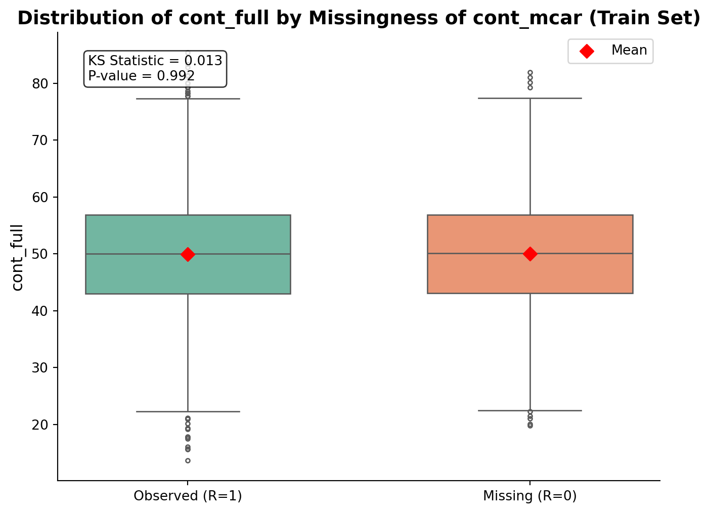

from sklearn.model_selection import train_test_splitimport pandas as pddef stratified_split(df, strat_vars, test_size=0.3, random_state=None):""" Split a DataFrame into train and test sets with stratification based on one or multiple variables. Parameters ---------- df : pandas.DataFrame The input dataset. strat_vars : list or str Column name(s) used for stratification. test_size : float, default=0.3 Proportion of the dataset to include in the test split. random_state : int, optional Random seed for reproducibility. Returns ------- train_df : pandas.DataFrame Training set. test_df : pandas.DataFrame Test set. """# Ensure strat_vars is a listifisinstance(strat_vars, str): strat_vars = [strat_vars]# Create a combined stratification key strat_key = df[strat_vars].astype(str).fillna("MISSING").agg("_".join, axis=1)# Perform stratified split train_df, test_df = train_test_split( df, test_size=test_size, stratify=strat_key, random_state=random_state )return train_df, test_df# --- Exemple d'utilisation ---# Stratification sur cat_mcar, cat_full et targettrain_df, test_df = stratified_split(df, strat_vars=["cat_mcar", "cat_full", "target"], test_size=0.3, random_state=42)print(f"Train size: {train_df.shape[0]} ({len(train_df)/len(df):.1%})")print(f"Test size: {test_df.shape[0]} ({len(test_df)/len(df):.1%})")
Train size: 7000 (70.0%)
Test size: 3000 (30.0%)
import matplotlib.pyplot as pltimport seaborn as sns# --- Step 1: Train/Test Split with Stratification ---train_df, test_df = stratified_split( df, strat_vars=["cat_mcar", "cat_full", "target"], test_size=0.3, random_state=42)# --- Step 2: Create the R indicator on the training set ---train_df = train_df.copy()train_df["R_cont_mcar"] = np.where(train_df["cont_mcar"].isnull(), 0, 1)# --- Step 3: Prepare the data for comparison ---df_obs = pd.DataFrame({"cont_full": train_df.loc[train_df["R_cont_mcar"] ==1, "cont_full"],"Group": "Observed (R=1)"})df_miss = pd.DataFrame({"cont_full": train_df.loc[train_df["R_cont_mcar"] ==0, "cont_full"],"Group": "Missing (R=0)"})df_all = pd.concat([df_obs, df_miss])# --- Step 4: KS Test before plotting ---from scipy.stats import ks_2sampstat, p_value = ks_2samp( train_df.loc[train_df["R_cont_mcar"] ==1, "cont_full"], train_df.loc[train_df["R_cont_mcar"] ==0, "cont_full"])# --- Step 5: Visualization with KS result ---plt.figure(figsize=(8, 6))sns.boxplot( x="Group", y="cont_full", data=df_all, palette="Set2", width=0.6, fliersize=3)# Add red diamonds for meansmeans = df_all.groupby("Group")["cont_full"].mean()for i, m inenumerate(means): plt.scatter(i, m, color="red", marker="D", s=50, zorder=3, label="Mean"if i ==0else"")# Title and KS test resultplt.title("Distribution of cont_full by Missingness of cont_mcar (Train Set)", fontsize=14, weight="bold")# Add KS result as text boxtextstr =f"KS Statistic = {stat:.3f}\nP-value = {p_value:.3f}"plt.gca().text(0.05, 0.95, textstr, transform=plt.gca().transAxes, fontsize=10, verticalalignment='top', bbox=dict(boxstyle="round,pad=0.3", facecolor="white", alpha=0.8))plt.ylabel("cont_full", fontsize=12)plt.xlabel("")sns.despine()plt.legend()plt.show()
/var/folders/v8/l5q0bw4s2ln17s59y7cc86rm0000gn/T/ipykernel_25747/38423988.py:38: FutureWarning:
Passing `palette` without assigning `hue` is deprecated and will be removed in v0.14.0. Assign the `x` variable to `hue` and set `legend=False` for the same effect.

import seaborn as snsimport matplotlib.pyplot as pltfrom scipy.stats import chi2_contingency# --- Step 1: Build contingency table on the TRAIN set ---contingency_table = pd.crosstab(train_df["R_cont_mcar"], train_df["cat_full"])chi2, p_value, dof, expected = chi2_contingency(contingency_table)# --- Step 2: Compute proportions for each group ---# --- Recompute proportions but flip the axes ---props = contingency_table.div(contingency_table.sum(axis=1), axis=0)# Transform for plotting: Group (R) on x-axis, Category as huedf_props = props.reset_index().melt( id_vars="R_cont_mcar", var_name="Category", value_name="Proportion")# Map R values to clear labelsdf_props["Group"] = df_props["R_cont_mcar"].map({1: "Observed (R=1)", 0: "Missing (R=0)"})# --- Plot: Group on x-axis, bars show proportions of each category ---sns.set_theme(style="whitegrid")plt.figure(figsize=(8,6))sns.barplot( x="Group", y="Proportion", hue="Category", data=df_props, palette="Set2")# Title and Chi² resultplt.title("Proportion of cat_full by Observed/Missing Status of cont_mcar (Train Set)", fontsize=14, weight="bold")# Add Chi² result as a text boxtextstr =f"Chi² = {chi2:.3f}, p = {p_value:.3f}"plt.gca().text(0.05, 0.95, textstr, transform=plt.gca().transAxes, fontsize=10, verticalalignment='top', bbox=dict(boxstyle="round,pad=0.3", facecolor="white", alpha=0.8))plt.xlabel("Observed / Missing Group (R)")plt.ylabel("Proportion")plt.legend(title="cat_full Category")sns.despine()plt.show()